Final Project: BLONK
The Process
Blonk is a music player that lets you physically interact with what instruments are playing and how you want them to interact. By using different blocks, you can play various drums, synth, keys, and bass samples that come together to make a track.
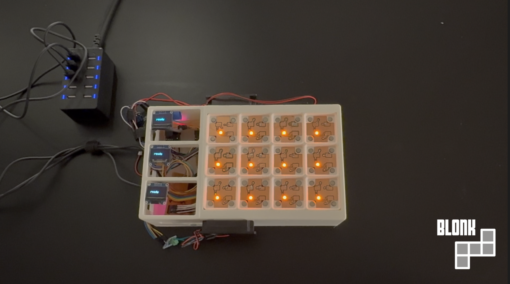
This project was inspired because I’ve been learning production and composition with a variety of DAWs (digital audio workstations). Apple-based DAWs have a “loops” feature, where you can import (and/or use their library) of sound samples that you layer on top of each other.

I wanted to make a physical version of this as a toy, and because we should learn to interact with art in a more hands-on, physical way. When you twist a hardware synth knob, you're getting tactile resistance, muscle memory, the exact angle your wrist needs to hit that filter sweep at 2:47. Touch is underrated: iPad music apps with actual finger gestures feel different than mouse control. A great example are MPE controllers (like the Ableton Push 3), which try to recover the physicality that digital software lost.

Beyond that, synth design is an interesting engineering problem in production. Most producers aren’t making synths from scratch; they’re using existing synth engines like Serum or Vital and tweaking presets. (This feature, where you could stack blocks to tweak a present, like envelopes or reverb, was going to be included in my project, and the design supports it, but the final product currently doesn’t have this.)
Modeling and Electronics
The Blonk revolves around the grid (which does limit some polyrhythmn ideas). I used an existing online tool, Gridfinity, to design the grid and blocks that fit in with each other. They are 42x42mm grids with 5mm height bins and magnetic cutouts (6.5mm diameter) to help the blocks snap into place.

In Week 12 (Networking and Communications), I have designed the prototype of how I'd want the stacks of blocks to communicate with each other. I'll be using a UART connection with the attiny1614 microcontrollers in each block. To make initial contact accurately, I'll use small magnets to snap the blocks into place and ensure the right placement, while using pogo pins to establish these vertical connections.
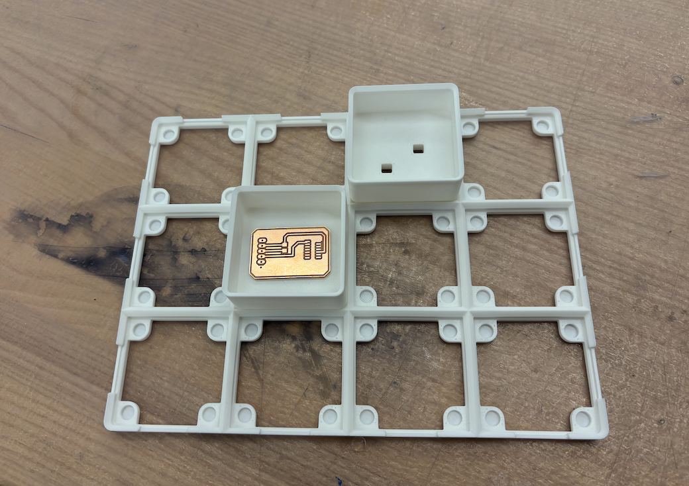
Each block would have 2 boards, the bottom board with the ATTINY1614, pogo pins and a receiver for tx communication from above, and the top board has 3 pads for VCC, GND, and TX/RX, and all three would be wired to the bottom. I also added an LED to the top board to show when a board was connected or not.
RP2040 Board
Each grid would just have the top block element, and its 3 elements are connected to a main RP2040 microcontroller for each row. That rp2040 is the universal vcc/gnd for all 4 grid elements and any block elements attached above.
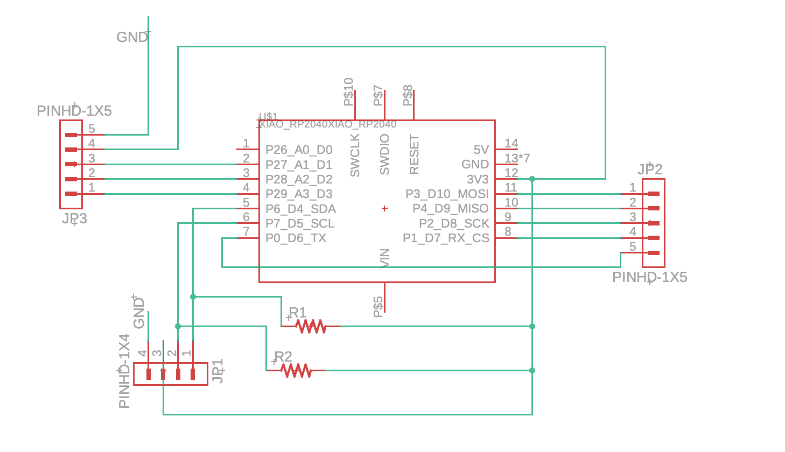
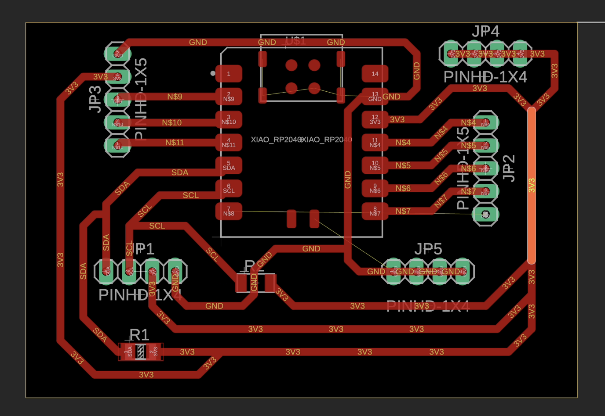
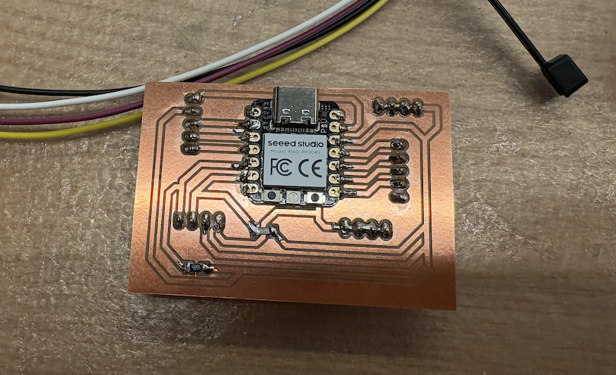
Pad Board (Top)
Designing the block PCBs was more complicated than I expected because my initial functional designs didn’t account for physical limitations. The 2 boards must fit perfectly into each block, and the pogo pin locations must align reliably (no risk of shorting or disconnecting).
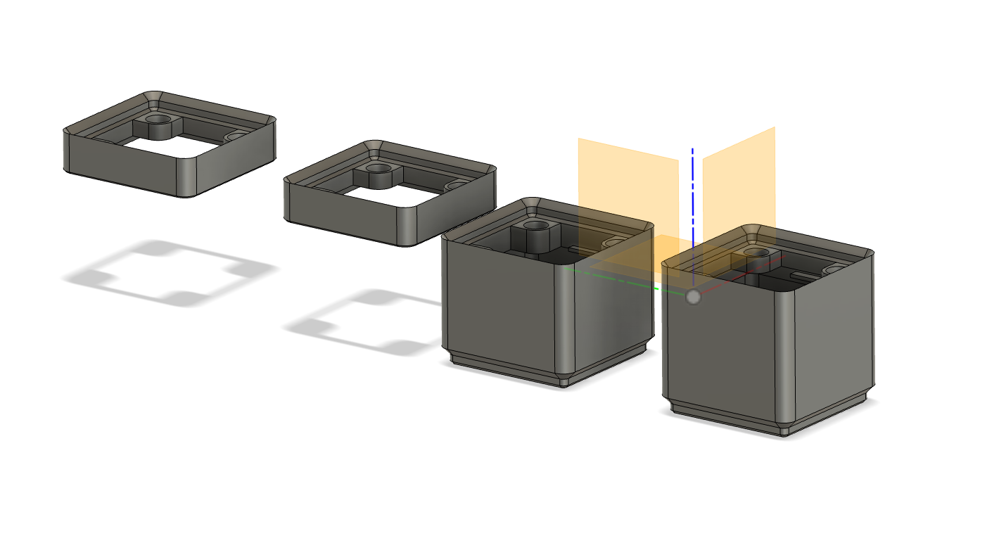
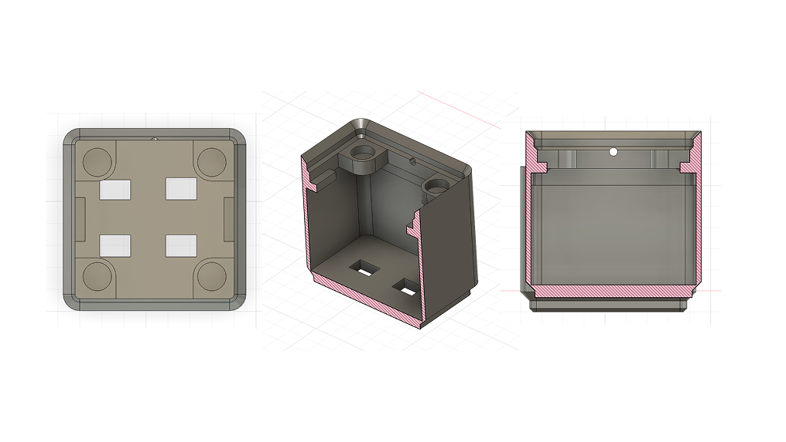
After maybe 12-ish iterations of incrementing the block design, I settled on a 35.75mm tall block that has slightly misaligned holes to allow for magnetic attachments above and notches for my top PCB to fit into easily. These pogo pins had to be at a perfect height to make consistent contact (and factoring in magnetic strength). Therefore, the final design of the top block (on the right) has an unique shape and an LED that serves as an indicator that it is connected to power or not:
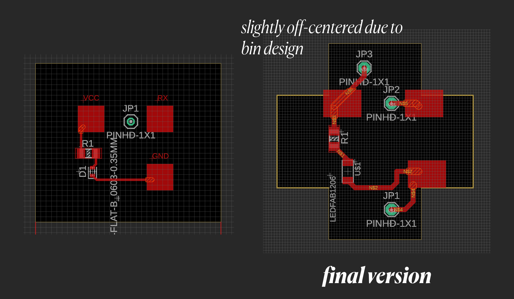
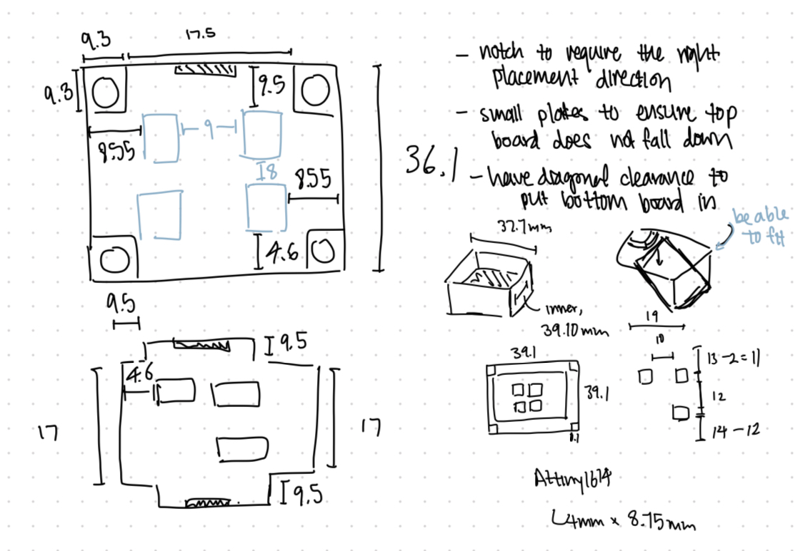
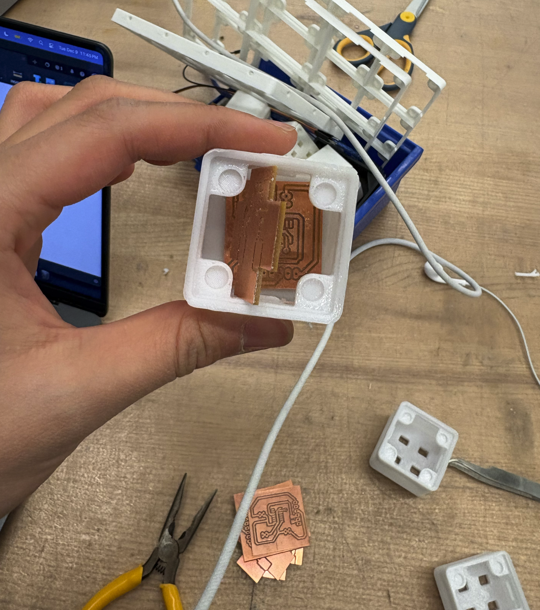
Attiny1614 Board (Bottom)
The bottom board was slightly simpler, but ensuring I had pinheads that wouldn’t tear up the traces from the wear and tear of the wires being compacted and connected to the board above was a challenge. I initially just use wires, but these were hard to attach and detach for debugging + were much more finicky, so I stuck with jumper cables.
Each attiny1614 is powered whenever the pogo pins are attached to the pads, so I don’t need separate power sources for each block. It is constantly sending data down the moment it is connected to power and can be programmed using a UPDI programmer, which works if I connect its tx/rx lines with a 4.99kΩ resistor and connected to the PA0 pin on the attiny.
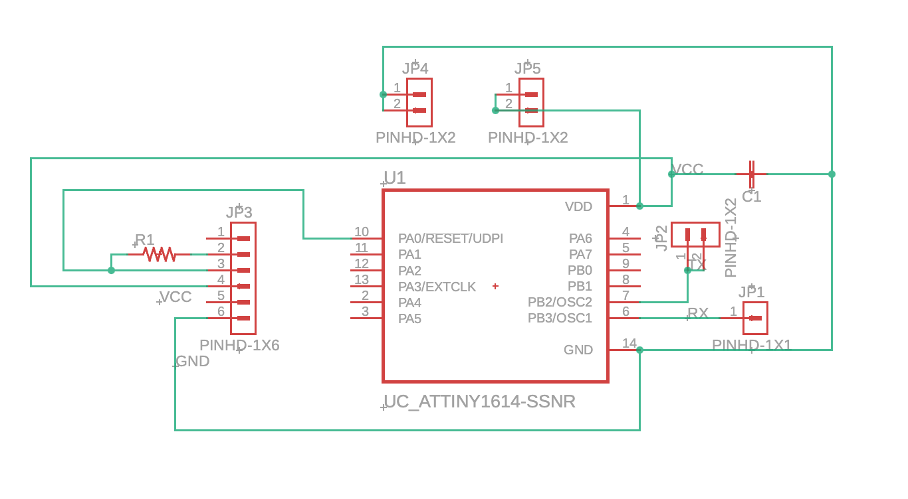
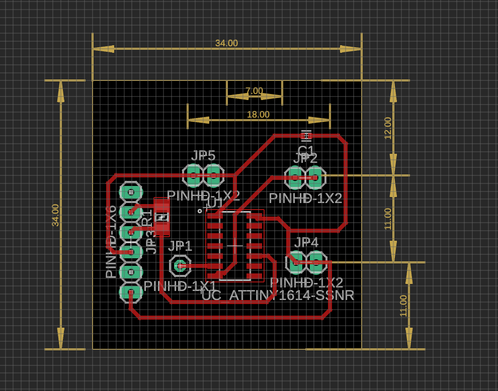
Some final designs:
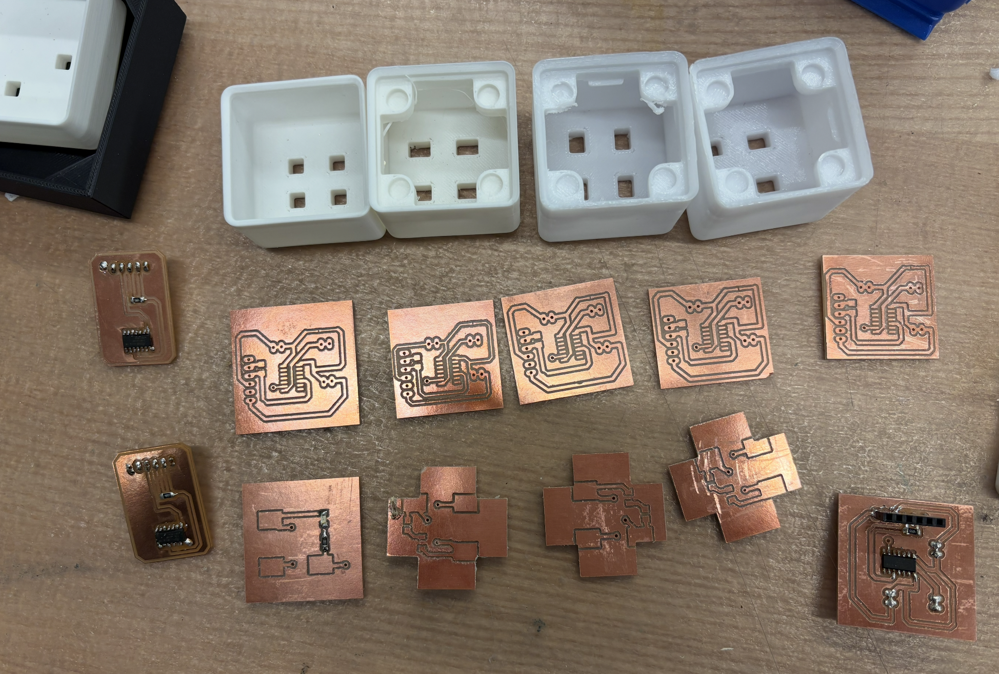
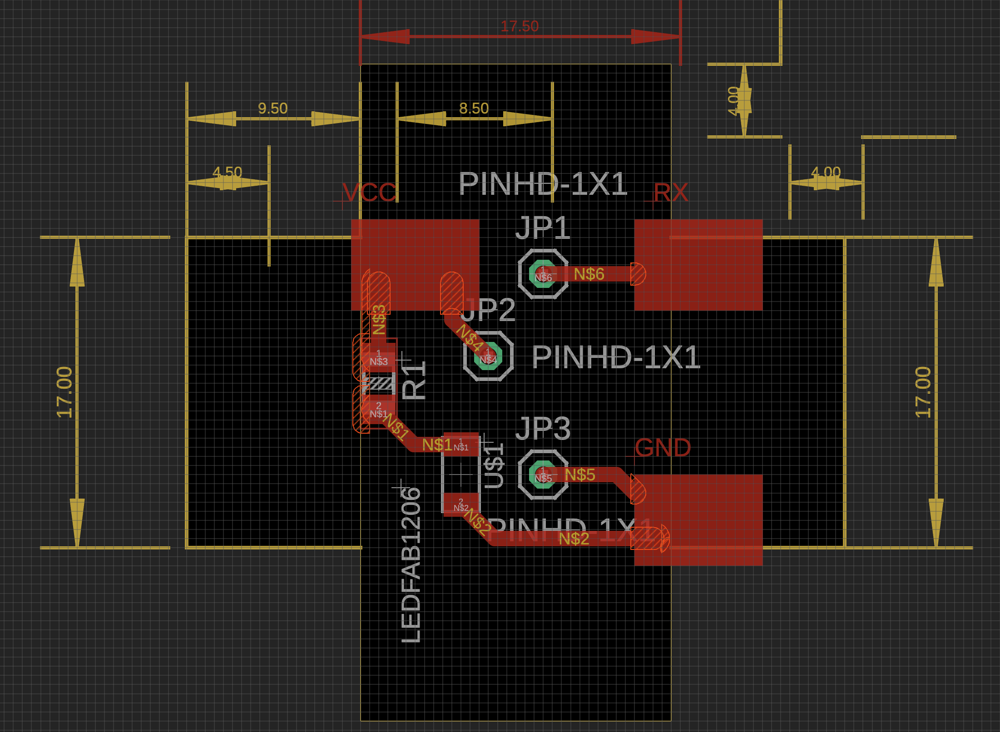
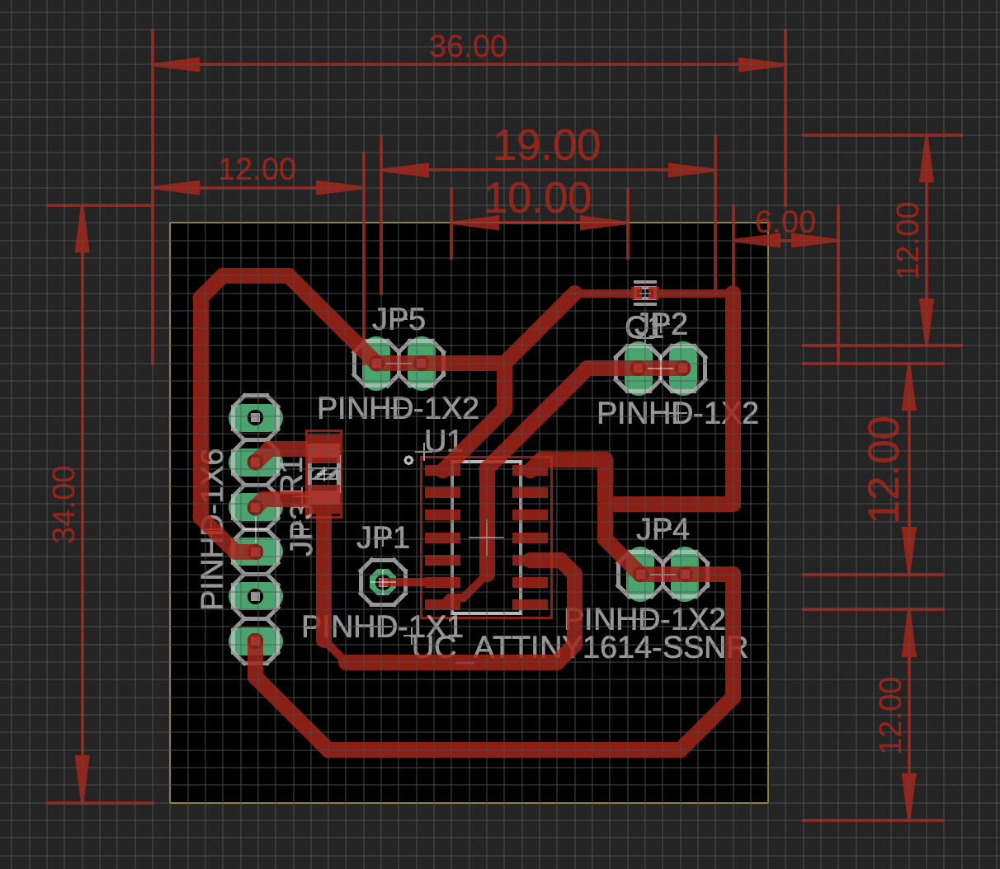
Code
Link to repo: https://github.com/ClaireBookworm/music_machine
There were some issues with the code. My initial versions were struggling with syncing the constant monitoring of new blocks being connected while also processing i2s sound output and i2c display updates. It turns out i2s holds the entire process until the entire sample finishes playing, messing up the clock cycles. In addition, I am giving the rp2040 4 rx inputs (while it usually default supposed just one serial rx pin), which means the solution must be software-side, and therefore slowing down processing even more. The link to this commit shows my initial naive tx pin-up pin-down implementation.
Also, Seeed Xiao RP2040s only have 2mb of flash memory, which means I couldn’t just upload a bunch of .wav files. I redesigned the process so each row contains a subset of samples (i.e., one row might have only 4-8 drum samples), and converted them to short, 4-second header (.h) files.
I played around a bit with using the (fake) duo-core system on the rp2040 (link here) and using the PIO system instead (link here). Finally, Quentin helped me figure out a solution, using a timer interrupt that fires every 45 microseconds (because my music samples are at a 22.05kHz sample rate).
void alarm_dt_handler(void){
// setup next call right away
hw_clear_bits(&timer_hw->intr, 1u << ALARM_DT_NUM);
timer_hw->alarm[ALARM_DT_NUM] = (uint32_t) (timer_hw->timerawl + _delT_us);
int active = track1.is_playing + track2.is_playing + track3.is_playing + track4.is_playing;
if (!active) { i2s.write(0, false); return; }
alarm_dt_handler is the audio callback which runs at the sample rate and mixes any active tracks by literally appending them (and modulating volume based on # of tracks active) and pushing a sample to i2s.
int32_t mixed = 0;
const int16_t* track_ptr;
int32_t track_len;
if (track1.is_playing) {
track_ptr = track_pointers[track1.track_id];
track_len = track_lengths[track1.track_id];
mixed += track_ptr[track1.counter] / active;
track1.counter++;
if (track1.counter >= track_len) {
track1.counter = 0;
}
}
I also have 4 serial ports listening for my tx input, and when a port receives a byte based on the ID (i.e., 0x01), it maps to a track ID and starts that track playing. By using track-specific timers (using millis()) to store the last time each port received data, the RP2040 doesn’t have to read from the pin too often and only tracks state changes. If 300 ms pass without a new byte, the track stops, which happens when I remove a block.
Assembly and Final Product
This was mostly straightforward and involved some finicky wire management, but I attached each ground, power, and UART line from these bottom pins to each of my 3 RP2040 boards.
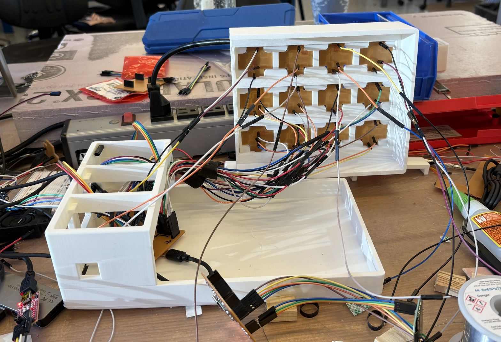
Since the pogo pins didn't always perfectly stay in contact with the pads, I added various spacers to allow for variable lengths based on each grid cell. I also added brackets to keep the entire outer frame of the Blonk together and make it look more clean.
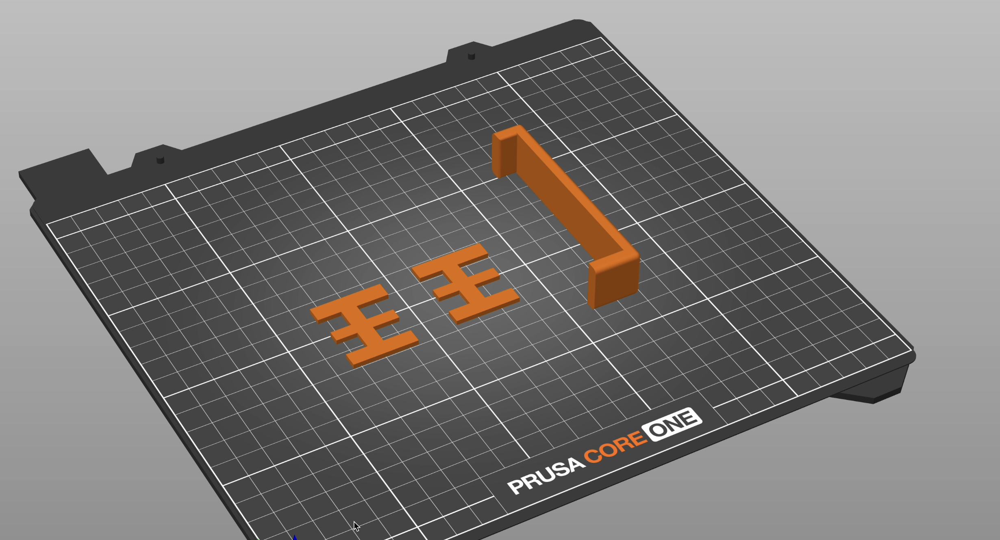
Questions
What does it do?
It lets you interact with it and plays music based on what you've attached.
Who's done what beforehand?
Obviously, there are many MPE controllers. Tangible music interfaces are a big focus of academia labs, such as Block Jam: 26 physical blocks for polyrhythmic sequencing, topology matters (how blocks connect), collaborative design. The reactable also exists: Reactable.pdf. It has a camera under a translucent table that tracks markers and projects visuals up through the table. Bjork used it on tour in 2007. It has a modular synth paradigm—blocks are oscillators/filters/sequencers, connecting them to route audio.
There's also Audiopad, a 2002 MIT MediaLab project, Audiopad. It tagged blocks on table, tracks position, leads to music. More sample-manipulation focused.
- loopqoob (2003) - orientation-sensitive cubes, each face = different loop/motif. closest to your "remove object stops sound" idea.
- siftables (2009, MIT media lab) - tiny screens that talk to each other, bump them together to sequence. too expensive/fragile for mass production.
- beatbearing (make magazine) - ball bearings on a grid over a CRT monitor, uses capacitive sensing through the screen.
- loopblocks (2021) - wooden blocks with photoresistors, designed for special ed settings. uses raspberry pi + pure data.
My project is different because it uses a heartbeat protocol instead of computer vision, allowing vertical stacking w/ pogo pins (most use 2d placement).
What sources did you use?
I used Orange Free Sounds to source the audio, online tutorials on basic synth information, and a lot of help from Anthony and code help from Quentin.
What did you design?
Design the holding box system, all the PCBs and communication mechanism, the human interaction framework. I used the pseudo-duo layer PCB architecture with the bottom and top, a rp2040 main board, and so on.
What materials and components were used? How much did they cost? What parts and systems were made?
- seeed xiao rp2040 (4x) - $5-6 each = ~$24
- attiny1614 microcontrollers (~16 blocks) - $1-2 each = ~$20
- pogo pins, magnets, jumper cables/pinheads
- i2s audio output (PCM5102A DAC likely?)
- ssd1306 oled display
- PCB fabrication [where? JLCPCB? cost?]
- 3d printing filament for blocks/grid
Where did they come from?
- 4 grid positions with rp2040 boards
- ~16 stackable blocks with dual PCBs each
- working 4-track audio mixer with real-time playback
- visual feedback system (oled + LEDs)
What tools and processes were used?
Fusion360 for PCB design and 3D modeling.
Audio conversion: .wav → 4-second 22.05kHz → .h header files (bc 2mb flash limit)
Tested: naive serial polling (failed - i2s blocking), duo-core (failed), PIO (failed), timer interrupts (worked). Used I2s and I2c protocols.
What questions were answered?
- can you do realtime audio mixing on rp2040 while monitoring 4 serial inputs?
- does heartbeat protocol work for physical objects?
- can you fit enough samples in 2mb?
- what's the actual latency from placing a block to hearing sound? how much is serial transmission vs audio buffer vs human perception?
- how long does it take someone to understand the system? (place block = sound, remove = silence)
- what if blocks transmitted different data (volume, filter cutoff, tempo) instead of just ID?
What worked? What didn't?
All of it worked but I wasn't able to efficiently implement the block stacking method. Sending a list of IDs down to the RP2040 would require changing a lot of the code (to take in a packet of data), and would require milling a lot more PCBs that worked reliably. I could probably do this in a day or two.
How was it evaluated?
Was music played!! Was it able to stop when I removed a block, did it mix the music reliably, was it displaying the correct information? Also, wanted to make it robust to human error and moving things around. Definitely all of the above, but if a user puts the block in the wrong rotation, it does temporarly break the machine, which is something easily fixed by adding a little notch to the block or changing the direction of the magnets.
What are the implications?
We should be able to have more tangible music :). Tangible sequencers could actually exist as consumer products instead of museum installations
Initial Design
Sketches and Design Choices
I've mostly settled on this as what I'm planning on building. I've been spending some time thinking of the implementation details. What I'd need is a grid that's able to power the blocks, which each have mictrocontrollers on them. JD recommended I use gridfinity to 3d print a simple grid that has magnets (to make sure they snap into place), and then have two pads on each grid cell using pogo pins. One would provide power, and the other would receive from the TX pin from the block. Since I'm planning on stacking blocks, I'll need a RX pin on the top of each block as well, that each receives information of the order of the blocks above, and eventually transmits what is essentially a list of IDs to the grid below.

Initial Thoughts
Honestly, I have too many different ideas for this project, so here's some of them and how far I've thought about the design.

Synths are very interesting. In software, they're made using C++ and using frameworks like JUCE / reaktor. You decide what oscillators (sine, saw, square, wavetable), what filters (low-pass, high-pass, how many poles), what modulation sources (LFOs, envelopes, etc.), and how they route together.
Hardware synths are done with circuit design and voltage controlled copmonents or microcontrollers running DSP (digital signal processing) algorithms. Synths are differentiated by oscillator type, filter character, modulation routing, and effects chain. In actual songs, producers layer multiple synths, so a synth in pop is 3-7 different synth layers with different octaves, timbres, stereo positions, and so on.

The project idea is a sort of physical version of this. I want to stack blocks on top of each other to make a synth and also put blocks in a grid to make a track? I'd scan them using some form of 3d scanner OR circuit completion method to detect what blocks are being placed where.
Here's a sketch of the concept. A few things I still want to figure out is how to actually immerse the user into the music, which is a main goal of this project. Having pre-programmed laser programs for each of the main blocks would be an interesting solution, since programming lasers normally takes a long time. Another thing I'm unsure about is how to actually scan what blocks are on the grid — a scanner might be too inaccurate, especially if I have stacks of blocks. Perhaps what works might be WiFi transmission of data from the bottom blocks?
A fun thing I discovered was the digital VCV rack, where you can program your own synths. Either I can reverse engineer some of the parts here OR just link it to this.